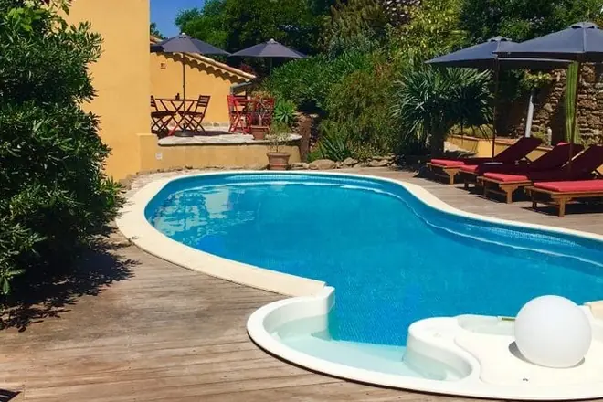
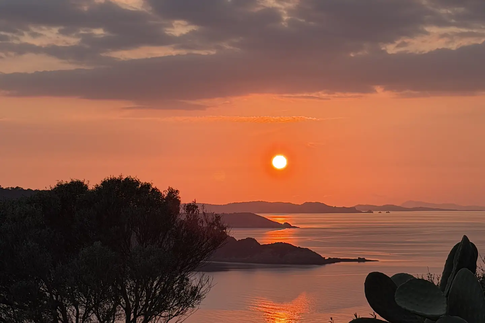
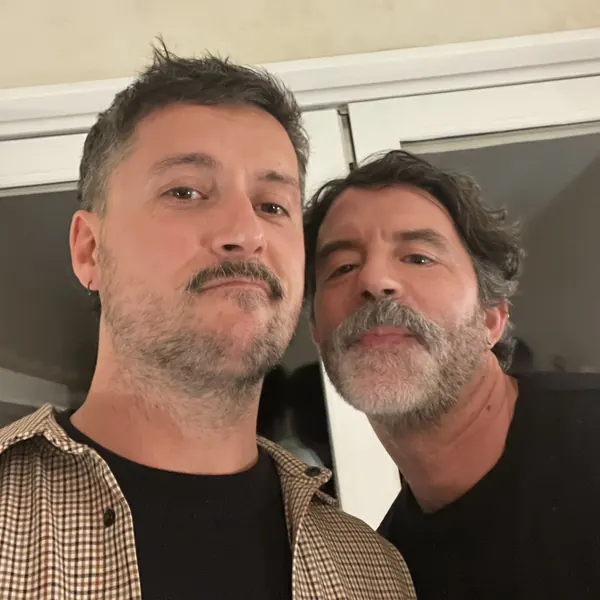
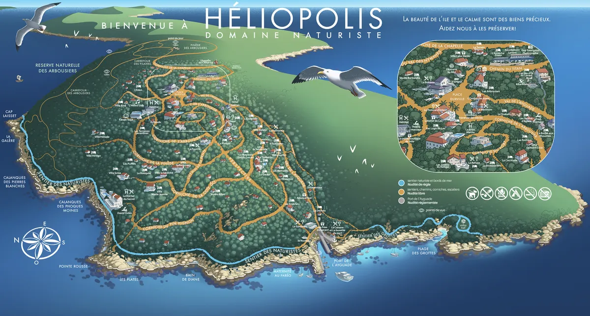
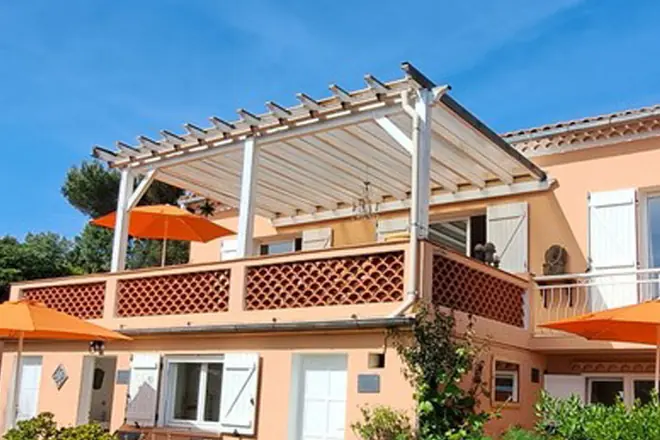
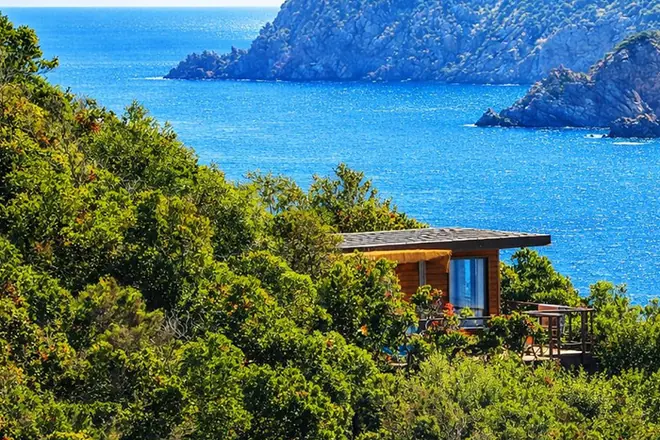
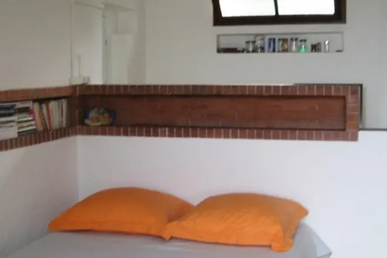
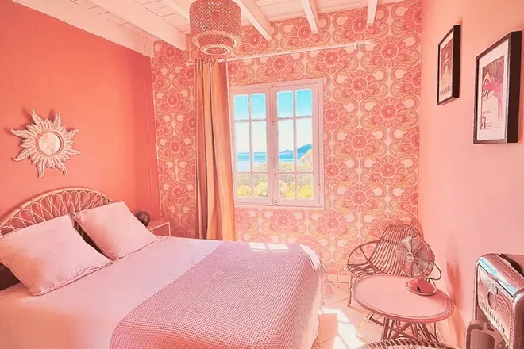
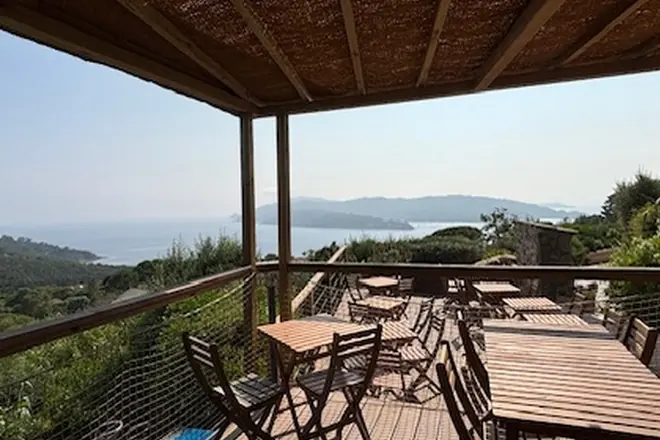

Cabo Verde
Ludovic & Jean-Edward
2 studios, 1 chambre et 1 appartement, avec piscine
À partir de 64 € la nuit
Chemin du Titan
se marient le 10 avril 2027 sur l’île du Levant

On a dit oui ! Et comme on ne fait jamais les choses à moitié, on vous embarque pour deux jours sur l’île du Levant, si chère à nos cœurs, pour célébrer notre union. (Libre à vous de rester plus longtemps…)
Nous serions ravis de vous avoir à nos côtés !
Ce site rassemble tout ce qu’il faut savoir : le programme, comment arriver jusqu’ici (oui, il y a un bateau à prendre), où dormir, et les réponses aux questions que vous n’osez pas poser.
Jérôme et Yohann

Ras le bol des thèmes : faites-vous plaisir, choisissez votre propre thème ! (Seul ou à plusieurs)
Une robe de princesse, un déguisement de Marsupilami ou votre look de tektonik de 2007 ? Tant que vous êtes contents, c’est le plus important ! Il faudra juste pouvoir le justifier auprès des autres convives (ex. : « oui oui, j’ai toujours aimé les serre-têtes et les mocassins à gland »).
Troisième sœur des Îles d’Or après Porquerolles et Port-Cros, l’île du Levant est un monde à part, à l’écart de la civilisation.
95 % de l’île est occupé par un terrain militaire où la DGA teste ses nouveaux missiles et autres jouets.
Le domaine d’Héliopolis occupe les 5 % restants. Il est, selon ses fondateurs :
« une simple cité rustique où les amateurs d’air et de soleil viendront se reposer des fatigues de la civilisation artificielle des villes. »
Héliopolis est un domaine naturiste. Cela ne veut pas dire que l’on se balade à poil partout. Le naturisme est réglementé. Au Levant, la nudité est :
En été, l’habit de base du Levantin, c’est le paréo. Il se noue et se dénoue au gré des pérégrinations. Mais quand il fait froid, on se balade bien couvert, y compris sur le bord de mer.
Le soir, le Levantin s’habille pour sortir.
L’île est très pentue. La Pomme d’Adam se trouve sur la place du village, à 120 mètres au-dessus du niveau de la mer. Le port est, très classiquement, au niveau de la mer. Il y a un bon quart d’heure de grimpette pour monter à la place.
Les festivités se dérouleront en haut, autour de la place. On vous recommande de ne pas vous loger trop bas, sauf si vous avez envie de vous muscler les cuisses.

L’île du Levant se mérite. C’est le bout du monde, particulièrement hors saison. Voici nos astuces de pro pour y venir, et en repartir.
À confirmer Les horaires des trains et des bateaux d’avril 2027 ne seront connus qu’environ trois mois avant. On les mettra ici dès qu’ils seront publiés. D’ici là, ceux indiqués ci-dessous sont donnés à titre indicatif.
Il y a deux compagnies. Dans les deux cas, prévoyez d’arriver 30 minutes avant le départ pour acheter vos billets. Pas besoin de réserver à l’avance.
À la gare de Toulon, il y a une station de taxis avec plein de véhicules. Attention, dans l’autre sens, il est impératif de réserver un taxi ou un VTC à l’avance :
Il y a aussi quelques TGV qui arrivent directement à la gare de Hyères. Dans ce cas, vous avez le choix entre le taxi et le bus Mistral 67 (2 à 3 bus par heure en général).
Le moteur de recherche d’itinéraires de la Région, Zou, inclut tous les modes de transports en commun.
Les horaires de train ne sont pas encore tous connus. Mais en principe, ça donne à peu près ça : À confirmer
Si vous passez par Hyères, il y a plein de parkings gratuits à proximité du port.
Si vous passez par Le Lavandou, c’est un peu plus compliqué :
Si vous vous moquez de votre karma carbone, l’avion est malheureusement une option efficace. L’aéroport de Toulon est à 15 minutes à pied du port d’Hyères.
Il faut prendre un avion tôt le matin pour attraper le bateau de 9h00 à Hyères, donc atterrir avant 8h00.
Vous trouverez tous les hébergements de l’île sur le site de l’Union des commerçants : iledulevant.com.fr.
On vous a fait une petite sélection des hébergements sympas les plus proches des festivités. Les prix sont donnés à titre indicatif, en fonction des infos que nous avons : vérifiez auprès des hébergeurs !

Ludovic & Jean-Edward
2 studios, 1 chambre et 1 appartement, avec piscine
À partir de 64 € la nuit
Chemin du Titan

Fabien & Yves
5 studios rénovés, vue mer
À partir de 60 € la nuit
277, corniche de la Pinède

Jean-Michel et Alain
3 lodges, avec piscine
À partir de 80 € la nuit
711, corniche de la Côte 60

Christian
1 bungalow, 1 chambre et 1 studio, vue mer
À partir de 45 € la nuit
Corniche de la Galère

Chris & Chris
4 chambres et 5 appartements, avec piscine
À partir de 75 € la nuit
Chemin du Titan

Bruno et Eric
3 studios, 1 bungalow et 1 tente safari
À partir de 79 € la nuit
213, corniche de l’Arbousier
Alex & Fred
À compléter
Non, le naturisme n’est obligatoire que sur le bord de mer. Sur le reste de l’île, on peut (et parfois on doit) être habillé.
Si le climat le permet, on vous recommande cependant d’aller vous tremper les fesses nues dans la mer, à la plage ou dans l’une des nombreuses petites criques isolées. Cela fait partie des plaisirs du Levant.
Il y a deux petites épiceries pour les courses de première nécessité, un antiquaire et un marchand de paréos. Et c’est tout. Le Levant n’est pas une destination shopping.
Plus important : il n’y a ni pharmacie ni banque.
A minima, une tenue blanche appropriée pour un mariage. Pensez aussi à prendre un paréo, de la crème solaire et de l’anti-moustique.
Non.
Une question, un bateau raté, un doute sur votre thème ? Appelez :
Jérémy Lavéant
Frère et témoin de Yohann
06 47 95 06 96Anne Mourot
Amie et experte du Levant
06 86 16 87 36Olivier Maisonneuve
Ami et patron de La Pomme d’Adam
06 83 22 59 25